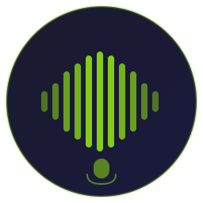
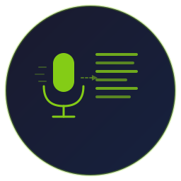
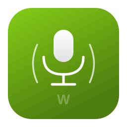

Выберите понравившийся вариант для приложения
Классический микрофон со звуковыми волнами по бокам
Микрофон в речевом пузыре — символ диктовки

Вейформ-бары как на floating-индикаторе

Микрофон и текст — процесс транскрипции

Современный app-icon: зелёный фон, белый микрофон
16×16 — стандартный размер иконки в трее:
32×32 — при масштабировании 200%: